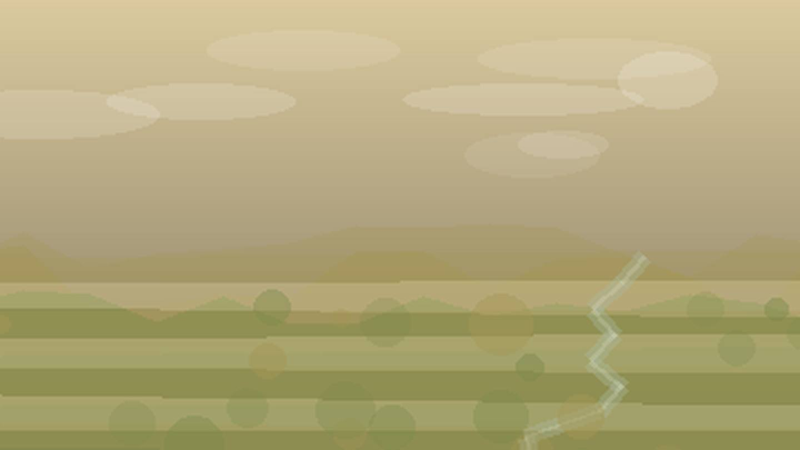

Главная / Республика Адыгея

Республика Адыгея
Что посадить
Что посадить
в Республике Адыгея
Выберите природную зону в Республике Адыгея: условия внутри региона различаются по теплу, влаге, ветру и длине сезона.
равнинная зона: тёплая степная зона сильна для овощей, бахчевых и сада при контроле влаги. Ориентиры внутри зоны: Майкоп, Адыгейск.
Открыть страницу зоны → предгорьяпредгорья: горный рельеф требует учитывать высоту, склон и ночные похолодания. Ориентиры внутри зоны: Каменномостский, Хаджох.
Открыть страницу зоны → горная зонагорная зона: горный рельеф требует учитывать высоту, склон и ночные похолодания. Ориентиры внутри зоны: Гузерипль.
Открыть страницу зоны →